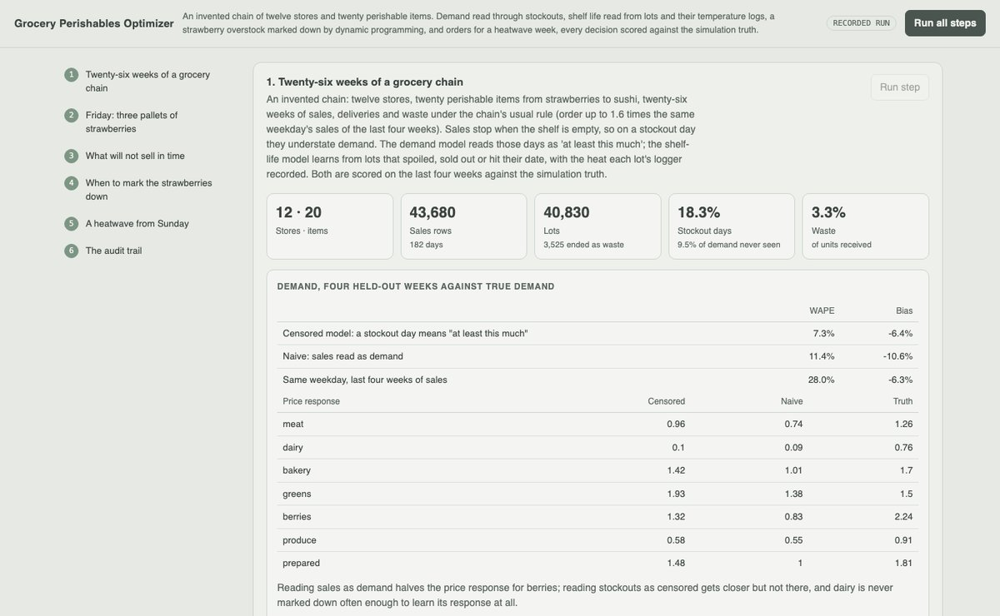
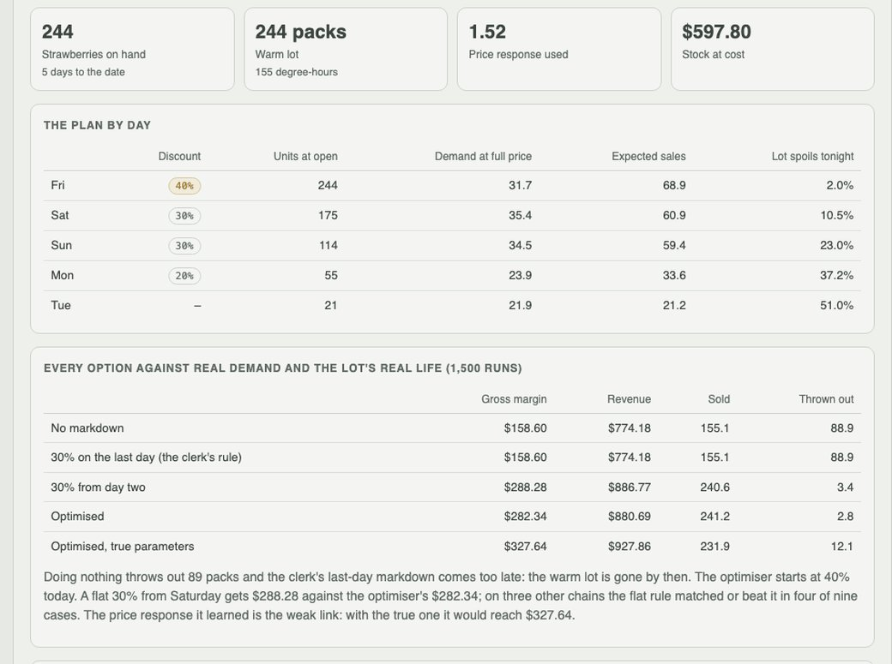
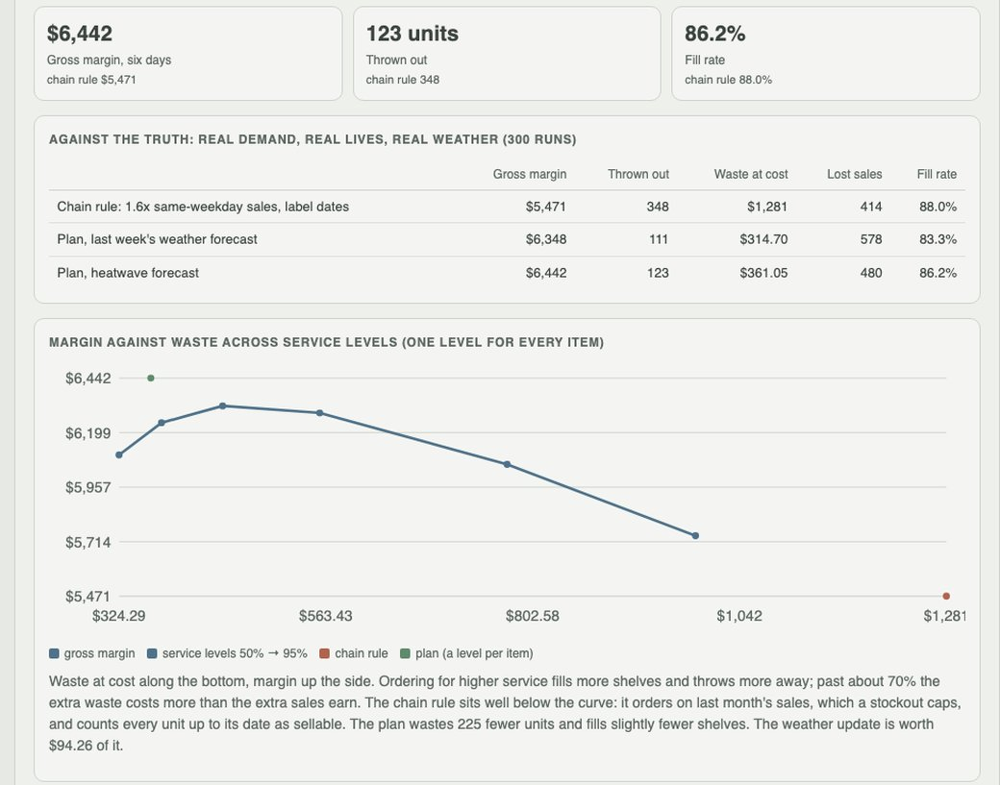

Python · censored regression · dynamic programming · 2026-10
When Should the Strawberries Go on Sale?
An invented grocery chain of twelve stores and twenty perishable items: demand read through stockouts, shelf life read from each lot's temperature log, a warm strawberry overstock marked down by dynamic programming, and orders for a heatwave week, every decision scored against the simulation truth (units thrown out in a heatwave week at one store: 348 under the chain's rule, 123 with the plan).

Built from a written blueprint as one vertical slice. The chain is simulated: its stores, items, 26 weeks of sales, 40,830 lots, temperature logs, weather and shelf camera come from a generator in the repository, which also keeps the truth the data hide (demand on stockout days, each lot's real shelf life, the real price response, the real weather). The models never see it; every decision is scored against it. The models have the same form as the generator, so their errors are errors of estimation, not of the wrong model. No image model runs: the shelf camera's counts are simulated. No language model is used. Not built: real POS, supplier or weather feeds, promotions planning, substitution between items, supplier minimums, Kafka, Terraform, single sign-on.
01 — The problem
A grocer's fresh department loses money two ways at once: shelves that run empty and food thrown away. The data that should help are misleading. Sales stop when the shelf is empty, so a stockout day understates demand, and an ordering rule built on last month's sales learns to under-order the items that sell out. The date code says every lot lasts the same, but a pallet that sat warm in a faulty truck does not. And a markdown on the last day is usually too late. Can a system read demand through the stockouts, read shelf life from the heat each lot saw, decide when to discount and how much to order, and say honestly where it beats the simple rules and where it does not?
Blueprint 12 of twenty in a fourth build book, built as its demo scenario end to end.
02 — What I built
A Python service on PostgreSQL with a background worker and a web page, started by one docker compose up.
- A simulated chain: twelve stores, twenty items from strawberries to sushi, demand by weekday, heat, flyer and price, lots whose real life shortens with the heat they pick up, sold oldest first.
- A demand model that treats a stockout day as "at least this much", fitted by censored maximum likelihood.
- A shelf-life model learned from lots that spoiled, sold out or were pulled at their date, with each lot's degree-hours from its logger.
- A markdown optimiser: a dynamic program over units on hand, with deep discounts held for a store manager.
- Replenishment: order-up-to levels from the forecast, counting only stock expected to last.
- Scoring of every option against the truth, beside the simple rules.
03 — How it was built
- 01
Twenty-six weeks of a grocery chain
12 stores, 20 items, 43,680 days of sales and 40,830 lots under the chain's own rule: order up to 1.6 times the same weekday's sales of the last four weeks. The shelf ran empty on 18.3% of days and 9.5% of demand was never seen; 3.3% of units were thrown out. Fitted on 22 weeks and scored on the last four against true demand, the censored model is off by 7.3% (WAPE), reading sales as demand by 11.4%, and the same-weekday average by 28.0%.
cz = censored & (y > 0) # a stockout day: P(demand >= sales), not P(demand = sales) nll[cz] = -np.log(gammainc(y[cz], lam[cz])) - 02
Shelf life from the heat a lot saw
A Weibull curve per category whose scale shrinks with the degree-hours above 4 C on the lot's logger. A spoiled lot's life ends in its last day; a lot that sold out or was pulled at its date was still good, and counts as censored. On the held-out weeks the model's Brier score is 0.220 against 0.378 for the date code alone. It is too kind to the warmest lots: 79% of those over 120 degree-hours spoiled before their date, and it predicted 70%.
sc = lab * np.exp(mu - b * dh / 100) s0, s1 = np.exp(-(t / sc) ** k), np.exp(-((t + 1) / sc) ** k) ll = log(s0[sp] - s1[sp]).sum() + log(s0[~sp]).sum() - 03
Friday: three pallets of warm strawberries
260 packs land at Elm Street, about seven days of sales, and the logger shows a five-hour refrigeration fault: 155 degree-hours, a median life of 3.7 days against a 5-day date, a 79% chance the lot spoils before its date. Four other deliveries are refused one by one. The shelf camera counts 244 against a system 266 and books 22 units of shrink, oldest lot first. With no markdown, the shelf-life model expects 129 packs thrown out by Tuesday, the date code alone 99; the truth is 86.
- 04
Markdowns by dynamic programming
Each day until the date, a discount from 0 to 50%: demand around the forecast scaled by the fitted price response, sales up to stock, then the lot spoils with its hazard for the night. The plan is 40%, 30%, 30%, 20%, then nothing; the 40% waits for a store manager, and the planner's own approval is refused. On the truth, 1,500 runs each: no markdown $159 of gross margin and 89 packs thrown out, the clerk's 30% on the last day the same (the lot is gone by then), a flat 30% from day two $288, the optimiser $282, the optimiser with the true parameters $328.
for a in ACTIONS: mu = mu_full[t] * (1 - a) ** (-elast) cont = hazard[t] * (-disposal * left) + (1 - hazard[t]) * V[left] val[n] = (probs * (price * (1 - a) * sold + cont)).sum() - 05
A heatwave, and orders for six days
A new forecast of 36-38 C lifts the strawberry week from 196 to 254 (truth 258; last month's sales say 181). Each item orders up to a quantile of the next day's demand, counting only stock the shelf-life model expects to survive, with the quantile chosen by simulating the model's own world, never the truth. On the truth for all twenty items: $6,442 of gross margin and 123 units thrown out, against $5,471 and 348 for the chain's rule; the same plan without the weather update makes $6,348 and throws out 111, filling fewer shelves.
- 06
Three chains the demo never uses
Demand error 6.7-7.2% against 24.8-25.8% for the same-weekday average. Through a heatwave week, nine stores: 13-21% more gross margin than the chain's rule and 28-55 units thrown out against 133-339. Markdowns, nine overstock cases: the optimiser beat no markdown in 2, matched it in 5 and lost in 2, and a flat 30% from day two matched or beat it in 4. Given the true parameters it was best in 7 of 9.
04 — Results
The demo. The warm strawberries: the plan by day and every option on the truth:

Orders through the heatwave, against the chain's rule, and margin against waste across service levels:

What worked. Reading stockouts as censored: demand error falls from 28.0% (the same-weekday average) to 7.3%, and the berries' price response from 0.83 (sales read as demand) to 1.32 against a true 2.24. Counting only stock that will last: most of the replenishment gain comes from that and from forecasting demand rather than capped sales, not from anything clever. The weather update added $94 at Elm Street and 3-5 points of fill rate across the nine held-out stores.
What did not. The markdown optimiser is the weakest piece. Its price response is learned from a few clerks' last-day markdowns, too low for berries and near zero for dairy, so where the response is wrong or the lot turns out to last, a flat 30% from day two did as well or better. The demand model still runs about 6% low. The plan fills slightly fewer shelves than the chain's rule (86.2% against 88.0%): it trades a few lost sales for far less waste.
Honest limits. The chain, the data and the truth are synthetic and the models share the generator's form; the shelf camera is simulated.
Checks. 9 tests, including: the shelf conserves units and sells oldest first, the censored fit recovers demand that stockouts hide where the naive fit does not, the shelf-life fit recovers the true curve from censored lots, the markdown program discounts only when it pays, order targets count only surviving stock, the demo journey end to end, a planner cannot approve their own markdown, idempotent replay, and one chain cannot see another's data.
05 — What I'd do next
- Learn the price response from deliberate markdown tests rather than last-day clearances, which is where the markdown gain is stuck.
- A negative binomial censored likelihood, to remove the forecast's 6% low bias.
- Supplier minimums, pack sizes and substitution between items in the order plan.